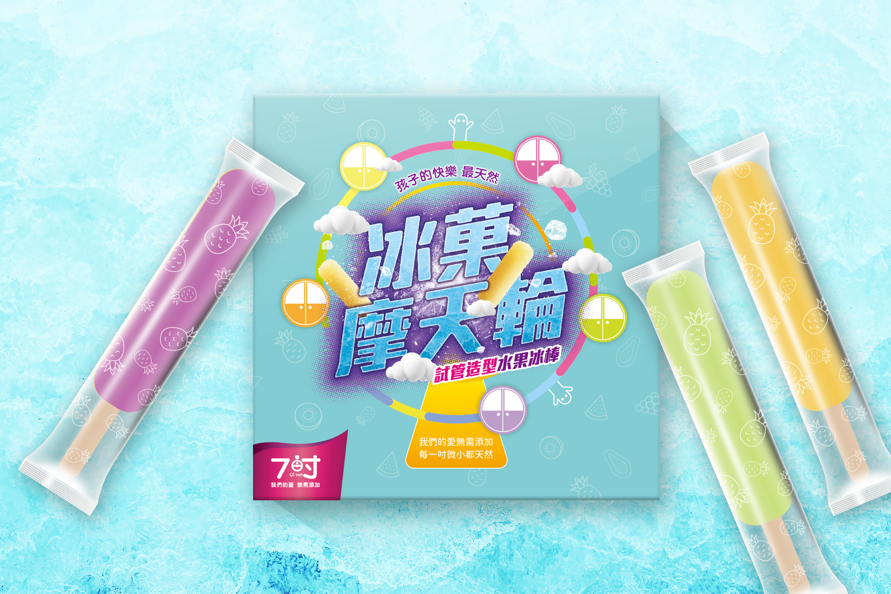

冰菓摩天輪/香桔小玉西瓜包裝設計
SHARE ON


🎡冰菓摩天輪
來到遊樂園無論大朋友小朋友都會恢復孩童的樣式瘋狂玩樂，這裡不只是許多人童年的美好回憶，也是孩子們的樂園。將成分天然無添加的冰棒與摩天輪做結合，不只吃得健康還有歡樂的聯想，營造清爽歡樂的氛圍。 每個摩天輪車廂代表冰棒的口味，用具代表性的顏色區分不同的口味。
🍉香桔小玉西瓜
跳脫市面上以產品為主要畫面的表現方式，以甜美卻不過於鮮豔的鵝黃色搭配黃綠色，將小玉西瓜的鮮甜以感性的色彩來陳述；設計溝通以英文表現，企圖與這個世代的年輕族群為主要的溝通對象。 將西瓜的「Water」已刪除線表現，試圖溝通一個很重要的訴求：天然，完全不加一滴水。利用文字的設計與變化下，期待能激起目標族群的興趣，並透過解構的過程了解品牌的核心訴求。